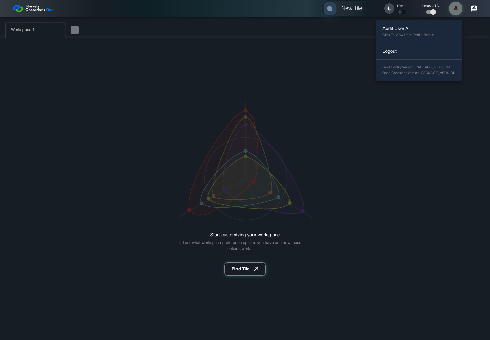
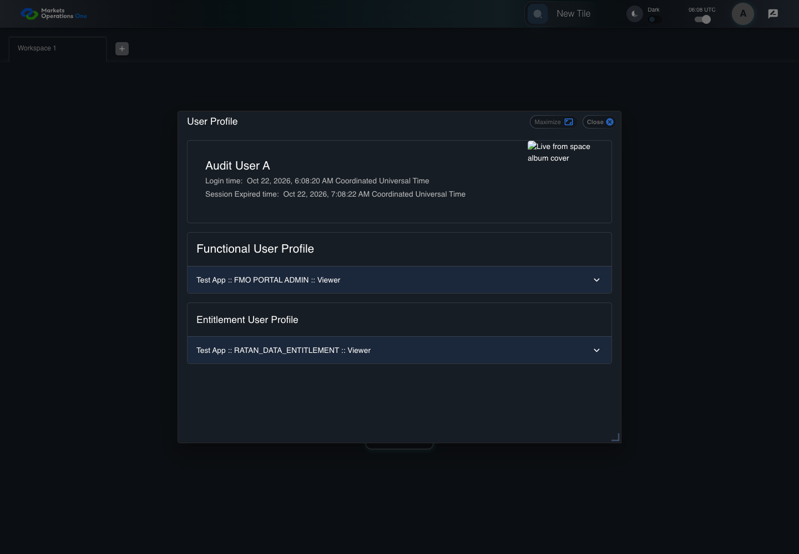

UI-PREF-007 separate functional and data entitlement profiles
PASS · application/run-050/ui-pref-007-separate-functional-and-data-entitlement-profiles-d3149abbf7c1-attempt-1 · ACTUAL_APPLICATION_LOCAL_SERVICES
Actual current React shell. Controlled login, validation, and activity renewal responses supply UI-USER-01, catalog, and entities. A controlled SystemJS React container displays routes and parameters. Local fixture SVGs replace catalog images. Identity, entitlements, and business tenant behavior are not established.
2026-10-22T06:08:20.334Z to 2026-10-22T06:08:25.311Z
Assertions and result · Artifact manifest · Exact run inputs and source hashes
Result SHA-256:b7e2ac7a034a14e1f26538e8c1610ec34d4425d423f5e89528f008af87bb6948Screenshot capture: CAPTURED. Named frames: 9.
Step screenshot bindings: COMPLETE. 8/8 canonical steps have execution screenshots.
Bindings measure structural coverage only. They do not establish screenshot content quality or relevance.
Screenshot content review: NOT_REVIEWED. Recorded context: 0/9 frames. Identical image bytes: 5 repeated frames. Recorded context does not establish human visual review.
Canonical step timeline
Given User A is authenticated as fixture UI-USER-01 with the case-specific permissions
Execution: PASSED.
1. step-01 Visible state after step 1: Given User A is authenticated as fixture UI-USER-01 with the case-specific permissions
2026-10-22T06:08:23.241Z · 1440×1000
Step: /Users/lushevol/code/github/ratan-release-impact/workbench/tasks/ui-test-coverage-20261022/test-cases.md:7561
SHA-256:c5f8c07642533323c43513c0325447ed4ad63ef4bfaf5dca17ca035de3763f1fAnd entities include RATAN_DATA_ENTITLEMENT and FMO PORTAL ADMIN
Execution: PASSED.
2. step-02 Visible state after step 2: And entities include RATAN_DATA_ENTITLEMENT and FMO PORTAL ADMIN
2026-10-22T06:08:23.367Z · 1440×1000
Step: /Users/lushevol/code/github/ratan-release-impact/workbench/tasks/ui-test-coverage-20261022/test-cases.md:7562
SHA-256:c5f8c07642533323c43513c0325447ed4ad63ef4bfaf5dca17ca035de3763f1fImage bytes match frame 1. An unchanged image can be valid for consecutive assertions. This match does not establish correct step content.
When User A clicks icon button named "User Profiles" inside the shell application bar
Execution: PASSED.
3. step-03 Visible state after step 3: When User A clicks icon button named "User Profiles" inside the shell application bar
2026-10-22T06:08:23.550Z · 1440×1000
Step: /Users/lushevol/code/github/ratan-release-impact/workbench/tasks/ui-test-coverage-20261022/test-cases.md:7563
SHA-256:4e8efe26b84fe29e938e528c391227121578c456be9013b8d3da20da8c17b323And User A clicks menu item with text "Click to view user profile details" inside the user menu with ID "menu-appbar-avatar"
Execution: PASSED.4. step-04 Visible state after step 4: And User A clicks menu item with text "Click to view user profile details" inside the user menu with ID "menu-appbar-avatar"
2026-10-22T06:08:23.846Z · 1440×1000
Step: /Users/lushevol/code/github/ratan-release-impact/workbench/tasks/ui-test-coverage-20261022/test-cases.md:7564
SHA-256:f90ba60b7b0e781d053da7433db2aeb7fdfa1f179dcaf4043cb3be47c199b383Then text with text "Functional User Profile" inside the dialog named "User Profile" is visible
Execution: PASSED.
5. step-05 Visible state after step 5: Then text with text "Functional User Profile" inside the dialog named "User Profile" is visible
2026-10-22T06:08:23.999Z · 1440×1000
Step: /Users/lushevol/code/github/ratan-release-impact/workbench/tasks/ui-test-coverage-20261022/test-cases.md:7565
SHA-256:f90ba60b7b0e781d053da7433db2aeb7fdfa1f179dcaf4043cb3be47c199b383Image bytes match frame 4. An unchanged image can be valid for consecutive assertions. This match does not establish correct step content.
And the profile group headed "Functional User Profile" contains entity text "FMO PORTAL ADMIN"
Execution: PASSED.
6. step-06 Visible state after step 6: And the profile group headed "Functional User Profile" contains entity text "FMO PORTAL ADMIN"
2026-10-22T06:08:24.320Z · 1440×1000
Step: /Users/lushevol/code/github/ratan-release-impact/workbench/tasks/ui-test-coverage-20261022/test-cases.md:7566
SHA-256:0eae1abfe369a7d2333179154604b56b51d67eb337438f17a0f2242495b65749And text with text "Entitlement User Profile" inside the dialog named "User Profile" is visible
Execution: PASSED.
7. step-07 Visible state after step 7: And text with text "Entitlement User Profile" inside the dialog named "User Profile" is visible
2026-10-22T06:08:24.436Z · 1440×1000
Step: /Users/lushevol/code/github/ratan-release-impact/workbench/tasks/ui-test-coverage-20261022/test-cases.md:7567
SHA-256:0eae1abfe369a7d2333179154604b56b51d67eb337438f17a0f2242495b65749Image bytes match frame 6. An unchanged image can be valid for consecutive assertions. This match does not establish correct step content.
And the profile group headed "Entitlement User Profile" contains entity text "RATAN_DATA_ENTITLEMENT"
Execution: PASSED.
8. step-08 Visible state after step 8: And the profile group headed "Entitlement User Profile" contains entity text "RATAN_DATA_ENTITLEMENT"
2026-10-22T06:08:24.549Z · 1440×1000
Step: /Users/lushevol/code/github/ratan-release-impact/workbench/tasks/ui-test-coverage-20261022/test-cases.md:7568
SHA-256:0eae1abfe369a7d2333179154604b56b51d67eb337438f17a0f2242495b65749Image bytes match frame 7. An unchanged image can be valid for consecutive assertions. This match does not establish correct step content.
Additional named frames

The final visible state after the named test assertions.
2026-10-22T06:08:24.733Z · 1440×1000Step: Test source: /Users/lushevol/code/github/ratan-release-impact/workbench/e2e/audit-specs/catalog-profile-expanded.spec.ts:266
SHA-256:
0eae1abfe369a7d2333179154604b56b51d67eb337438f17a0f2242495b65749Image bytes match frame 8. An unchanged image can be valid for consecutive assertions. This match does not establish correct step content.
Screenshots establish visible state only. Assertions and traces support functional claims.